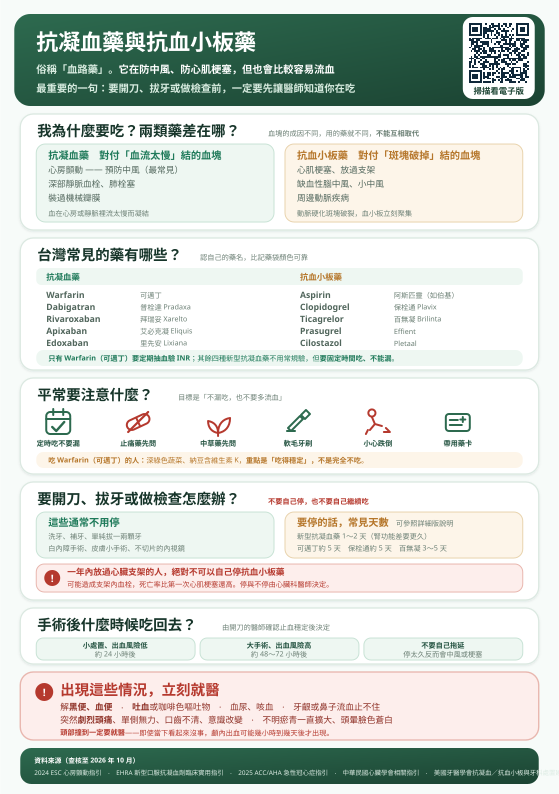

很多人叫它「血路藥」。它在幫你防中風、防心肌梗塞，代價是比較容易流血。這一頁說明怎麼吃、什麼時候要停、什麼時候該衝急診。
聽語音版最重要的一句話：要開刀、拔牙、做任何侵入性檢查之前，先讓那位醫師知道你在吃這個藥——不要自己停，也不要自己繼續吃。
血塊（血栓）不是只有一種成因，所以藥也分兩類。兩者不能互相取代，有些人甚至兩種都要吃。
例如心房顫動的人又剛放了支架：心房顫動要抗凝血，支架要抗血小板。這種情況下醫師會短期合併，但出血風險會明顯上升，所以會盡快調整成單一用藥。
這類組合一定要由心臟科醫師設計與調整，而且期間要特別注意有沒有出血。
請認自己的藥名，不要只記藥袋顏色或藥丸形狀——換藥廠、換醫院，外觀就變了。
| 學名 | 台灣常見商品名 | 要注意的事 |
|---|---|---|
| Warfarin | 可邁丁 | 要定期抽血驗 INR；受食物與其他藥影響大 |
| Dabigatran | 普栓達 Pradaxa | 膠囊不可剝開或磨粉；腎功能影響大 |
| Rivaroxaban | 拜瑞妥 Xarelto | 15、20 毫克要隨餐吃吸收才好 |
| Apixaban | 艾必克凝 Eliquis | 一天兩次，間隔要平均 |
| Edoxaban | 里先安 Lixiana | 一天一次 |
Warfarin 在體內作用的時間長，漏吃一次影響較小；新型抗凝血藥藥效消得快——一天兩次的藥漏掉一次，保護力很快就掉下來。
所以「不用驗血」不等於「比較隨便」，反而要更固定時間吃。
| 學名 | 台灣常見商品名 | 要注意的事 |
|---|---|---|
| Aspirin | 阿斯匹靈（如伯基） | 最常見；腸胃不適要說，不要自己停 |
| Clopidogrel | 保栓通 Plavix | 放支架後常用 |
| Ticagrelor | 百無凝 Brilinta | 一天兩次；少數人會覺得有點喘，回診說 |
| Prasugrel | Effient | 效果強，出血風險也較高 |
| Cilostazol | Pletaal | 多用於周邊動脈疾病 |
目標只有一句：不漏吃，也不要多流血。
深綠色蔬菜、納豆、青花菜含維生素 K，會抵銷 Warfarin 的作用。但重點不是完全不吃，而是吃得穩定——每天份量差不多就好。
突然大量吃或突然完全不吃，都會讓 INR 跑掉。長期不吃青菜反而對健康更不好。
另外要注意：酒精、蔓越莓汁、以及抗生素（感冒看診拿的藥也算）都可能影響 INR，看其他科時記得說你在吃可邁丁。
飲食沒有特別限制，青菜、納豆都照吃。但有三件事要記得：
這兩個方向都會出事。自己停可能中風或支架塞住；自己繼續吃可能在手術中大出血。
正確做法是：讓「開刀的醫師」和「開藥的醫師」一起決定。你要做的是在排定日期時就主動說出你在吃什麼藥，不要等到前一天才講。
國際與國內的作法都已經趨向能不停就不停，因為停藥的風險常常比出血更大。以下通常不需要停藥，以局部止血處理即可——但仍須由檢查或手術的醫師評估後決定是否停藥：
美國牙醫學會明確指出：對大多數病人，牙科治療前不需要更改抗凝血或抗血小板治療。如果牙醫要你停藥，可請他與開藥的醫師聯繫，或依下表的出血風險分級與停藥天數斟酌。
要不要停、停多久，主要看這個手術本身有多容易出血。臨床指引大致分三級（以下為常見例子，不是完整清單）：
| 分級 | 常見的手術或檢查 | 一般作法 |
|---|---|---|
| 極低 | 白內障手術、補牙洗牙、單顆拔牙、小範圍皮膚處置、裝節律器或去顫器 | 多數可以不停藥 |
| 中低 | 胃鏡大腸鏡（含切片）、關節鏡、支氣管鏡、冠狀動脈攝影、腹腔鏡膽囊切除、疝氣修補、痔瘡手術、淋巴結切片 | 視情況，多數停較短 |
| 高 | 脊椎或硬膜外麻醉、大型骨科手術（換髖換膝）、心臟手術、腦部或脊椎手術、攝護腺刮除與多數泌尿科手術、腎臟切片、腸胃道大手術、癌症手術 | 通常需要停，且停較久 |
牙科要補充一點：單顆拔牙屬於極低風險，但一次拔多顆、或牙齦狀況不好時風險會上升，作法可能不同。
| 藥物 | 一般停藥時間 | 備註 |
|---|---|---|
| 新型抗凝血藥 （普栓達、拜瑞妥、艾必克凝、里先安） | 1～2 天 | 出血風險低的手術約 24 小時；高的約 48 小時。腎功能不好要停更久，普栓達尤其明顯 |
| Warfarin（可邁丁） | 約 5 天 | 停藥後通常要驗 INR 確認才開刀。少數高血栓風險者需要住院銜接針劑 |
| Aspirin | 多數不用停 | 若手術或檢查醫師評估後建議停，以 5～7 天為原則 |
| Clopidogrel（保栓通） | 約 5 天 | 這三種是放支架後的主力藥，停藥前務必先問心臟科 |
| Ticagrelor（百無凝） | 3～5 天 | |
| Prasugrel（Effient） | 約 7 天 |
上表為一般情況的參考值。實際天數要看手術出血風險、你的腎功能、血栓風險，由醫師決定——請不要拿這張表自己算。
支架表面的血管內皮還沒長好之前，停藥可能造成支架內急性血栓——血管在數小時內再次完全塞住，死亡率比第一次心肌梗塞還高。
這種情況下，非緊急的手術通常會建議延後，等過了關鍵期再做。要不要停、能不能延，由心臟科醫師決定。
原則是：確認止血穩定之後，越快恢復越好。
| 情況 | 一般何時恢復 |
|---|---|
| 小處置、出血風險低（拔牙、皮膚小手術） | 約 24 小時後 |
| 大手術、出血風險高 | 約 48～72 小時後 |
| 仍在滲血或有血腫 | 由手術醫師判斷，可能再延後 |
太早吃回去——傷口可能再出血、形成血腫。
拖太久不吃——這其實是臨床上更常見、也更危險的問題。很多人出院後「怕流血」就一直不敢吃，結果幾週後中風或心肌梗塞。
出院時請當場問清楚三件事：哪一天開始吃回去、從幾點那一次開始、要不要先回診確認。把答案寫下來。
即使當下看起來完全沒事也一樣。吃這類藥的人，顱內出血可能在幾小時到幾天後才慢慢出現，等到有症狀往往已經嚴重。
跌倒撞到頭、車禍、被球打到頭——請直接到急診，並告訴醫護人員你在吃什麼藥。
直接壓是最有效的方法。用乾淨紗布持續壓 10 分鐘，中途不要一直掀開看。流鼻血時坐著、頭稍微前傾（不要後仰），捏住鼻翼軟骨處。
壓不住、或反覆流，就去急診。不要因為怕麻煩而自己停藥觀察。
看原因。心房顫動多數需要長期吃，因為中風風險不會消失。深部靜脈血栓可能吃幾個月後評估停藥。放支架的雙重抗血小板通常吃滿一年後調整為單一用藥。由醫師依你的情況決定，不要自己停。
Aspirin 與抗凝血藥都可能增加腸胃出血。有胃潰瘍病史、年紀大、或同時吃兩種以上抗血栓藥的人，醫師常會加開胃藥保護。如果吃了會胃痛、火燒心，請回診說，不要自己停藥。
少量、偶爾，而且要穩定。大量飲酒會增加出血與跌倒風險，對吃 Warfarin 的人還會讓 INR 波動。不建議把喝酒當日常。
可以，而且應該要。建議快走、游泳、騎車這類不易撞擊的運動。避免拳擊、橄欖球、滑雪等容易撞到頭或身體的項目。騎腳踏車請戴安全帽。
疫苗可以打，打完壓久一點（約 5 分鐘）即可。針灸、拔罐、推拿前請先告知施術者，並避免深層或大力的手法，以免形成血腫。
藥帶足、放隨身行李（托運遺失就沒藥吃）。帶英文病歷摘要或藥單。長途飛行多走動、多喝水。時差調整怎麼吃，出發前先問醫師或藥師。
不可以。這類藥和止痛藥不同——它沒有「有效的感覺」，它的效果是「沒有發生中風或梗塞」。沒事正代表它在作用。
本頁內容依下列臨床指引與專業建議編寫，並針對台灣一般民眾的用語與就醫情境改寫（查核至 2026 年 10 月）：
本頁為一般衛教資訊，不能取代個別診療。文中的停藥天數與恢復時間均為一般情況下的參考值；您的腎功能、血栓風險、手術出血風險與合併用藥都會改變這些建議，請以主治醫師的評估為準。
本頁不提供任何藥物劑量建議，絕不可據以自行停藥、改藥或調整劑量。
若出現解黑便、吐血、劇烈頭痛、單側無力或意識改變，或頭部受到撞擊，請立即就醫。
